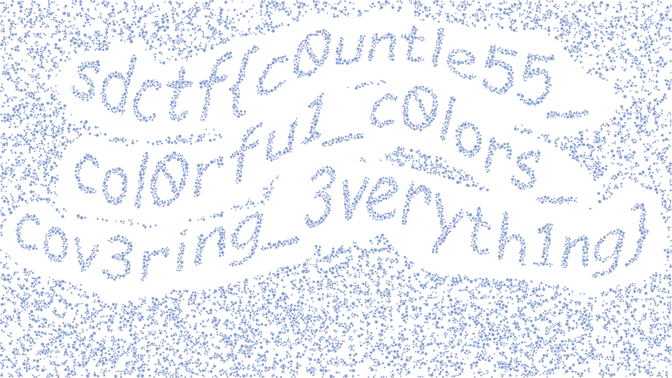

ファイル flag.svg が与えられた。
flag.svg を
テキストエディタで開くと、1行に1個のcircleタグが書かれており、c1～c6のクラスに分かれているようだった。
そこで、以下のようにgrepを用い、クラスごとにcircleタグを抜き出した。
A file flag.svg was given.
Opening flag.svg on
Opening the file with a text editor, I found there were one circle tag per line, and they were separated to classes c1 to c6.
Seeing this, I used grep to extract circle tags of each classes in this way:
grep による抽出を行った後、flag.svg の最初の2行
After extracting via grep, I added the first 2 lines of flag.svg:
と最後の1行
and the last line:
をそれぞれの出力ファイルに書き足した。 その結果、以下のような画像が得られた。
to each output files. These operations resulted in images like these:
| flag-c1.svg | flag-c2.svg | flag-c3.svg |
| flag-c4.svg | flag-c5.svg | flag-c6.svg |
クラスc1、c3、c6の抽出結果に文字のようなものが見えたので、
以下のようにこれらをまとめて抽出した。
I found somethings like characters in the results for class c1, c3, and c6.
So, I extracted all of them at once in this way:
同様に最初と最後を書き足すと、以下のような画像が得られた。
Adding the first and last lines in the same way resulted in an image like this:

この画像からflagを読み取ることができた。
I read the flag from this image.